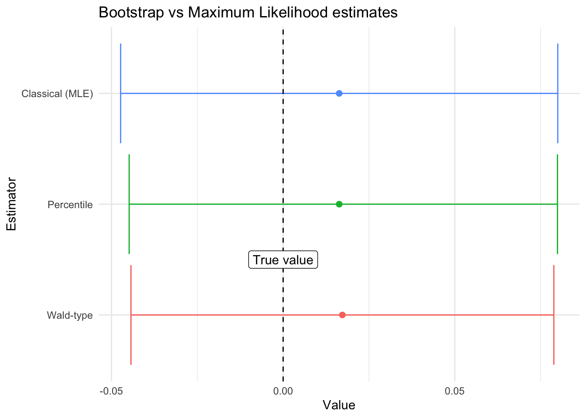

pacman::p_load(survey, svrep, matrixStats, modelsummary)Bootstrapping a survey regression
R
bootstrap
statistical-inference
survey analysis
survey
Abstract
In this entry I discuss how to estimate regression coefficients using bootstrapped samples. This allows to calculate regressions even for cases where the survey function is not available.
Bootstrap 101
The main idea behind bootstrap is that resampling the random sample allows us to generate replicates of the sampling process itself. Using these re-sampled data, we can generate our desired estimators. These estimators will be asymptotically equivalent to the desired quantities.
Bootstraping a mean
As an example, consider a random sample of n = 1000 samples from a \(Normal(0,1)\) distribution: \[
\{X_1, X_2, \dots, X_n\} \text{ with } X_i\sim \text{Normal}(0,1)
\]
In R this can be obtained as:
samples <- rnorm(1000)One can estimate the mean with the classical estimator, \(\bar{X} = \frac{1}{n}\sum_{i=1}^n X_i\):
mean(samples)[1] 0.01726104In R this has already been programmed as:
t.test(samples)$conf.int[1] -0.04433005 0.07885213
attr(,"conf.level")
[1] 0.95The bootstrap estimate relies on going over several samples and calculating the mean for each of the resamples:
resample_means <- rep(NA, 1000) #Save the mean of the re-samples
for (i in 1:1000){
resample <- sample(samples, size = 1000, replace = TRUE)
resample_means[i] <- mean(resample)
}
#Bootstrap estimate:
mean(resample_means)[1] 0.01633088The Wald-type confidence intervals at level \((1-\alpha)\times 100\%\) are given by: \[ \bar{X}\pm t_{1-\alpha/2}\sqrt{\widehat{\textrm{Var}}_{\text{Boot}}(\bar{X})} \] where the unbiased estimator of the variance is:
\[ \widehat{\textrm{Var}}_{\text{Boot}}(\bar{X}) = \sum\limits_{i = 1}^{n} (\bar{X}_{\text{Boot},i} - \bar{X})^2 \]
where \(\bar{X}_{\text{Boot},i}\) is the estimate of the mean in the \(i\)-th bootstrap sample.
In R, these confidence intervals can be computed as:
mu_estim <- mean(resample_means)
var_estim <- var(resample_means)
t_1_alpha <- qt(1 - 0.05/2, df = 1000)
ci_wald <- c("Lower" = mu_estim - t_1_alpha*sqrt(var_estim),
"Upper" = mu_estim + t_1_alpha*sqrt(var_estim))Notice that the formula is not divided by \(n\) as we are estimating the standard error of the variance for the mean statistic and not of the \(X_i\). Intuitively, it makes sense not to divide by the number of bootstrap samples. If we did we could then artificially decrease uncertainty around estimates just by taking more boostrap samples without gathering more data!
Another type of confidence intervals (not recommended) is the percentile confidence interval given by the \(\alpha/2\) and \(1 - \alpha/2\) sample-percentiles of the bootstrap sample:
\[
[\bar{X}_{\text{Boot}, (\alpha/2)}, \bar{X}_{\text{Boot}, (1 - \alpha/2)}]
\] In R:
#Bootstrap estimate:
quantile(resample_means, c(0.025, 0.975)) 2.5% 97.5%
-0.04485072 0.07992000 In this particular case, they all are excellent estimates for our quantity of interest:

Generating bootstrap samples for surveys
There are already pre-programmed functions in the survey package that allow users to calculate some quantities of interest via bootstrap. In this example, we’ll go through the first part of the survey example vignette but with bootstrap. We’ll load the data and setup the survey design, closely following the vignette:
library(survey)
data(api)
clus1 <- svydesign(id = ~dnum, weights = ~pw, data = apiclus1, fpc = ~fpc)Then, we’ll estimate the mean:
svymean(~api00, clus1) mean SE
api00 644.17 23.542To change into bootstrap mode one has only to replicate the design
boot_clus1 <- as_bootstrap_design(clus1, replicates = 1000)
svymean(~api00, boot_clus1) #Mean but now using 1000 re-samples mean SE
api00 644.17 22.599Notice that we had to use the design to generate the replicates. This is an important thing to keep in mind as for complex surveys one cannot simply resample without considering the design Mashreghi, Haziza, and Léger (2016).
Playing with the bootstrapped sample
Now, what happens if we actually need to obtain the replicates (and use them!). For example, when implementing a model that is not already pre-programmed as part of the survey package. In that case, we’ll need to use weights and apply a weighted version of the model to the different estimates. As an example, consider replicating the following linear regression model:
regmodel <- svyglm(api00 ~ ell + meals, design = clus1)
#Create regression table
regmodel |>
modelsummary(estimate = "{estimate} [{conf.low}, {conf.high}]",
statistic = NULL, conf_level = 0.95,
gof_omit = c("IC|R|L|N|F"),
title = "Classical coefficient estimators")| (1) | |
|---|---|
| (Intercept) | 817.182 [776.502, 857.863] |
| ell | −0.509 [−1.219, 0.201] |
| meals | −3.146 [−3.803, −2.488] |
Of course, one way to do that would be via the survey replicates:
regmodel2 <- svyglm(api00 ~ ell + meals, design = boot_clus1)
#Create regression table
regmodel2 |>
modelsummary(estimate = "{estimate} [{conf.low}, {conf.high}]",
statistic = NULL, conf_level = 0.95,
gof_omit = c("IC|R|L|N|F"),
title = "Bootstrapped coefficient estimators")| (1) | |
|---|---|
| (Intercept) | 817.182 [772.839, 861.526] |
| ell | −0.509 [−1.443, 0.425] |
| meals | −3.146 [−4.028, −2.263] |
The svyrep package allows us to obtain a data.frame of replicate weights each of them representing the bootstrapped sample.
#Get the replicate weights
rep_weights <- weights(boot_clus1)We then loop through each of the estimates and compute the variables of interest. In this case, we’ll compute and save the coefficients of the regression:
coefficients <- matrix(NA, nrow = ncol(rep_weights), ncol = 3)
for (i in 1:ncol(rep_weights)){
model <- lm(api00 ~ ell + meals, data = apiclus1,
weights = rep_weights[,i])
coefficients[i,] <- coef(model)
}Finally we aggregate the data:
df <- data.frame("variable" = names(coef(model)),
"estimates" = coefficients |> colMeans(),
"sd" = coefficients |> colSds())Confidence intervals
Following Arnab (2017) we can estimate both types of confidence intervals for a complex survey design:
Wald-type confidence intervals
Wald-type confidence intervals can be estimated with the variance:
data.frame("variable" = names(coef(model)),
"estimates" = colMeans(coefficients),
"var" = colVars(coefficients),
"ci_low" = colMeans(coefficients) - t_1_alpha*sqrt(colVars(coefficients)),
"ci_up" = colMeans(coefficients) + t_1_alpha*sqrt(colVars(coefficients))) variable estimates var ci_low ci_up
1 (Intercept) 814.2897385 414.6276549 774.331790 854.2476873
2 ell -0.5015806 0.1838348 -1.342952 0.3397912
3 meals -3.1202612 0.1643234 -3.915731 -2.3247913Quantile confidence intervals
Quantile confidence intervals can be estimated with the variance:
data.frame("variable" = names(coef(model)),
"lower_quantile_ci" = coefficients |> colQuantiles(probs = 0.025),
"upper_quantile_ci" = coefficients |> colQuantiles(probs = 0.975)) variable lower_quantile_ci upper_quantile_ci
1 (Intercept) 772.978734 850.8792929
2 ell -1.276907 0.4150228
3 meals -4.000878 -2.3307806And that’s it!
Epilogue
A quick note: percentile estimators of the confidence intervals are highly prevalent in the literature and seem widely accepted within the sciences (at least ecology and epidemiology). Albeit, to my knowledge, there is no final proof that these intervals work as intended. Wu and Rao argue for a different method (the t method). However, Z. Mashreghi et al states: “it is not clear that the other types of bootstrap confidence intervals (percentile or t) could be used with either of these methods since they are based on sampling schemes designed to match the variability of the estimator, but not its distribution”.
References
Arnab, Raghunath. 2017. “Survey Sampling Theory and Applications.” In. Academic Press.
Mashreghi, Zeinab, David Haziza, and Christian Léger. 2016. “A Survey of Bootstrap Methods in Finite Population Sampling.”